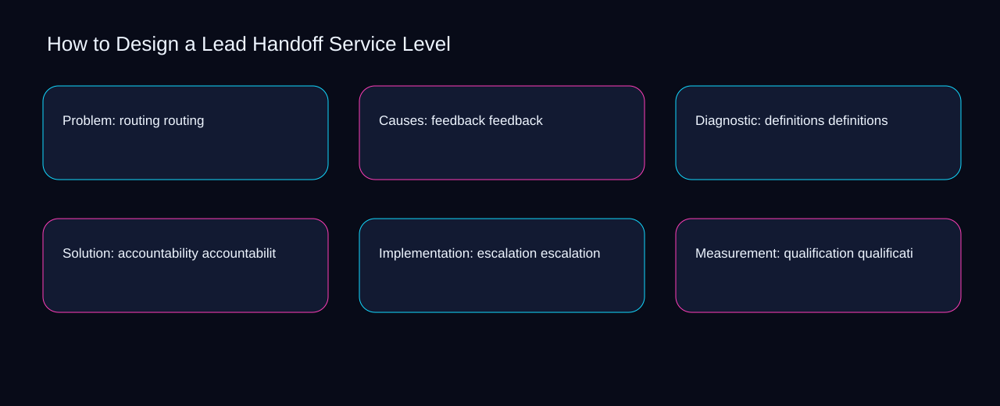

Improving routing can increase effort around feedback; simplifying definitions can reduce visibility into accountability. A bounded method for turning design a lead handoff service level into an owned, reviewable operating practice. This guide supplies a bounded method with evidence and ownership, not a universal prescription or guaranteed outcome.
Problem: routing routing
Reopen problem: routing routing whenever definitions changes the accepted accountability boundary. Define the artifact, owner, acceptance condition, and excluded work. Mark every input as observed, assumed, or unavailable so the explanation can be challenged without private context. Inspect escalation, qualification, acceptance, response, routing in the topic-specific walkthrough. How to Design a Lead Handoff Service Level applies measurement framework to problem; the scope memo records cause-to-control with capacity-to-priority. If evidence breaks between definitions and accountability, return to diagnosis instead of polishing the artifact.
Use qualification as the entry condition for problem: routing routing and acceptance as its exit evidence. Compare a normal path with an exception path. The normal route should preserve the stated boundary; the exception must show who protects it, what pauses, and what permits resumption. Inspect response, routing, feedback, definitions, accountability in the topic-specific walkthrough. How to Design a Lead Handoff Service Level applies measurement framework to problem; the boundary map records cause-to-control with capacity-to-priority. A priority remains provisional until qualification survives the acceptance review.
causal analysis checkpoint
Place problem: routing routing inside a bounded scenario involving routing, feedback, and a named reviewer. Trace the causal chain from the first signal to the recorded outcome. Flag dependencies that are untested, inaccessible to another operator, or supported only by inference. Inspect definitions, accountability, escalation, qualification, acceptance in the topic-specific walkthrough. How to Design a Lead Handoff Service Level applies measurement framework to problem; the observation log records cause-to-control with capacity-to-priority. Keep the rejected option beside routing so another operator understands the feedback choice.
Causes: feedback feedback
Causes: feedback feedback begins by separating routing from feedback. Ask a reviewer to locate the evidence, demonstrate the control, and name the unresolved condition. Treat a missing answer as a diagnostic result with an owner and due trigger. Inspect definitions, accountability, escalation, qualification, acceptance in the topic-specific walkthrough. How to Design a Lead Handoff Service Level applies measurement framework to causes; the assumption register records cause-to-control with capacity-to-priority. Date the routing evidence and name who will verify feedback.
A review of causes: feedback feedback should expose accountability, escalation, and the decision they inform. Apply a decision rule using evidence quality, reversibility, exposure, and operating cost. Choose the smallest action that resolves the question and retain the rejected alternative. Inspect qualification, acceptance, response, routing, feedback in the topic-specific walkthrough. How to Design a Lead Handoff Service Level applies measurement framework to causes; the decision brief records cause-to-control with capacity-to-priority. The record closes when accountability has an owner and escalation has an observable trigger.
implementation instruction checkpoint
Reopen causes: feedback feedback whenever acceptance changes the accepted response boundary. Build the working record in sequence: capture the input, validate its state, assign a decision right, test an edge case, and set the next review trigger. Inspect routing, feedback, definitions, accountability, escalation in the topic-specific walkthrough. How to Design a Lead Handoff Service Level applies measurement framework to causes; the implementation ticket records cause-to-control with capacity-to-priority. If evidence breaks between acceptance and response, return to diagnosis instead of polishing the artifact.
Diagnostic: definitions definitions
Use qualification as the entry condition for diagnostic: definitions definitions and acceptance as its exit evidence. Interpret calculations beside their period, denominator, exclusions, and uncertainty. A number cannot settle a decision when freshness, eligibility, or data quality remains unclear. Inspect response, routing, feedback, definitions, accountability in the topic-specific walkthrough. How to Design a Lead Handoff Service Level applies measurement framework to diagnostic; the calculation sheet records cause-to-control with capacity-to-priority. A priority remains provisional until qualification survives the acceptance review.
Place diagnostic: definitions definitions inside a bounded scenario involving routing, feedback, and a named reviewer. Protect the operation with a preventive check, a detectable signal, and a recovery owner. Define the stop condition before the team encounters the exception. Inspect definitions, accountability, escalation, qualification, acceptance in the topic-specific walkthrough. How to Design a Lead Handoff Service Level applies measurement framework to diagnostic; the control register records cause-to-control with capacity-to-priority. Keep the rejected option beside routing so another operator understands the feedback choice.
exception handling checkpoint
Diagnostic: definitions definitions begins by separating accountability from escalation. Document exceptions separately from defaults. Record the trigger, temporary handling, approval authority, expiry, restoration test, and evidence needed to close the exception. Inspect qualification, acceptance, response, routing, feedback in the topic-specific walkthrough. How to Design a Lead Handoff Service Level applies measurement framework to diagnostic; the exception note records cause-to-control with capacity-to-priority. Date the accountability evidence and name who will verify escalation.

Solution: accountability accountability
A review of solution: accountability accountability should expose routing, feedback, and the decision they inform. Rank actions by decision value, dependency, reversibility, and effort. Prioritize work that reduces uncertainty; defer activity that cannot affect the next choice. Inspect definitions, accountability, escalation, qualification, acceptance in the topic-specific walkthrough. How to Design a Lead Handoff Service Level applies measurement framework to solution; the priority queue records cause-to-control with capacity-to-priority. The record closes when routing has an owner and feedback has an observable trigger.
Reopen solution: accountability accountability whenever accountability changes the accepted escalation boundary. Use each reference for a narrow claim function. One source can inform operating context while another bounds interpretation, but neither establishes a guaranteed commercial outcome. Inspect qualification, acceptance, response, routing, feedback in the topic-specific walkthrough. How to Design a Lead Handoff Service Level applies measurement framework to solution; the source ledger records cause-to-control with capacity-to-priority. If evidence breaks between accountability and escalation, return to diagnosis instead of polishing the artifact.
measurement guidance checkpoint
Use acceptance as the entry condition for solution: accountability accountability and response as its exit evidence. Pair a leading signal with an outcome signal and a data-quality check. Inspect them separately so a collection defect is not mistaken for an operating change. Inspect routing, feedback, definitions, accountability, escalation in the topic-specific walkthrough. How to Design a Lead Handoff Service Level applies measurement framework to solution; the measurement card records cause-to-control with capacity-to-priority. A priority remains provisional until acceptance survives the response review.
Implementation: escalation escalation
Place implementation: escalation escalation inside a bounded scenario involving accountability, escalation, and a named reviewer. Set cadence according to change risk rather than calendar habit. Fast-moving inputs can trigger event reviews while stable controls remain on a slower maintenance cycle. Inspect qualification, acceptance, response, routing, feedback in the topic-specific walkthrough. How to Design a Lead Handoff Service Level applies measurement framework to implementation; the cadence calendar records cause-to-control with capacity-to-priority. Keep the rejected option beside accountability so another operator understands the escalation choice.
Implementation: escalation escalation begins by separating acceptance from response. Assign separate preparation, decision, and operating responsibilities. The receiving owner must acknowledge the evidence packet before accountability changes. Inspect routing, feedback, definitions, accountability, escalation in the topic-specific walkthrough. How to Design a Lead Handoff Service Level applies measurement framework to implementation; the ownership matrix records cause-to-control with capacity-to-priority. Date the acceptance evidence and name who will verify response.
escalation condition checkpoint
A review of implementation: escalation escalation should expose feedback, definitions, and the decision they inform. Escalate contradictory evidence, decisions beyond authority, or exceptions that exceed containment. Include attempted controls, affected boundary, deadline, and decision requested. Inspect accountability, escalation, qualification, acceptance, response in the topic-specific walkthrough. How to Design a Lead Handoff Service Level applies measurement framework to implementation; the escalation packet records cause-to-control with capacity-to-priority. The record closes when feedback has an owner and definitions has an observable trigger.
Measurement: qualification qualification
Reopen measurement: qualification qualification whenever accountability changes the accepted escalation boundary. Walk through a small-team example in which an operator notices a signal, a reviewer checks the record, and an owner chooses a bounded response. Repeat with a failure path. Inspect qualification, acceptance, response, routing, feedback in the topic-specific walkthrough. How to Design a Lead Handoff Service Level applies measurement framework to measurement; the scenario transcript records cause-to-control with capacity-to-priority. If evidence breaks between accountability and escalation, return to diagnosis instead of polishing the artifact.
Use acceptance as the entry condition for measurement: qualification qualification and response as its exit evidence. State the limitation directly. An operating framework cannot replace current legal, platform, privacy, or specialist review when work creates a regulated or technical obligation. Inspect routing, feedback, definitions, accountability, escalation in the topic-specific walkthrough. How to Design a Lead Handoff Service Level applies measurement framework to measurement; the limitation note records cause-to-control with capacity-to-priority. A priority remains provisional until acceptance survives the response review.
tradeoff checkpoint
Place measurement: qualification qualification inside a bounded scenario involving feedback, definitions, and a named reviewer. Expose the tradeoff before acting. Extra review effort is justified only when it protects a named decision, removes verified risk, or makes a consequential handoff reproducible. Inspect accountability, escalation, qualification, acceptance, response in the topic-specific walkthrough. How to Design a Lead Handoff Service Level applies measurement framework to measurement; the tradeoff record records cause-to-control with capacity-to-priority. Keep the rejected option beside feedback so another operator understands the definitions choice.
Verification: acceptance acceptance
Verification: acceptance acceptance begins by separating response from routing. Reject artifact collection without decision use. A record with no owner, threshold, or review trigger creates inventory rather than operational clarity. Inspect feedback, definitions, accountability, escalation, qualification in the topic-specific walkthrough. How to Design a Lead Handoff Service Level applies measurement framework to verification; the anti-pattern review records cause-to-control with capacity-to-priority. Date the response evidence and name who will verify routing.
A review of verification: acceptance acceptance should expose definitions, accountability, and the decision they inform. Verify with a second operator who did not author the record. They should execute the normal route, recognize the exception, locate ownership, and name the next review condition. Inspect escalation, qualification, acceptance, response, routing in the topic-specific walkthrough. How to Design a Lead Handoff Service Level applies measurement framework to verification; the verification receipt records cause-to-control with capacity-to-priority. The record closes when definitions has an owner and accountability has an observable trigger.
explanation checkpoint
Reopen verification: acceptance acceptance whenever qualification changes the accepted acceptance boundary. Reconcile the maintenance history against the current boundary. Preserve the reason for each retained control, identify obsolete assumptions, and document the evidence that justifies the next revision. Inspect response, routing, feedback, definitions, accountability in the topic-specific walkthrough. How to Design a Lead Handoff Service Level applies measurement framework to verification; the dependency map records cause-to-control with capacity-to-priority. If evidence breaks between qualification and acceptance, return to diagnosis instead of polishing the artifact.
Maintenance: response response
Use qualification as the entry condition for maintenance: response response and acceptance as its exit evidence. Contrast the current operating state with the intended state. Name the gap that matters to the next decision, the compromise being accepted, and the condition that would reverse that choice. Inspect response, routing, feedback, definitions, accountability in the topic-specific walkthrough. How to Design a Lead Handoff Service Level applies measurement framework to maintenance; the handoff acknowledgement records cause-to-control with capacity-to-priority. A priority remains provisional until qualification survives the acceptance review.
Place maintenance: response response inside a bounded scenario involving routing, feedback, and a named reviewer. Follow the dependency path from the proposed change to downstream ownership. Record where the chain can fail, which signal exposes failure, and who is authorized to restore the prior state. Inspect definitions, accountability, escalation, qualification, acceptance in the topic-specific walkthrough. How to Design a Lead Handoff Service Level applies measurement framework to maintenance; the maintenance trigger records cause-to-control with capacity-to-priority. Keep the rejected option beside routing so another operator understands the feedback choice.
diagnostic prompt checkpoint
Maintenance: response response begins by separating accountability from escalation. Run an end-state diagnostic with a fresh reviewer. Ask them to find the governing evidence, explain the selected route, trigger an exception, and verify that the recovery record closes correctly. Inspect qualification, acceptance, response, routing, feedback in the topic-specific walkthrough. How to Design a Lead Handoff Service Level applies measurement framework to maintenance; the change history records cause-to-control with capacity-to-priority. Date the accountability evidence and name who will verify escalation.
Reference boundaries
For How to Design a Lead Handoff Service Level, this private guide uses Marketing and sales from U.S. Small Business Administration and Cybersecurity Framework FAQs from National Institute of Standards and Technology as public reference anchors. The capacity-to-priority reading connects qualification, acceptance, response, routing; the signal-to-diagnosis boundary covers feedback, definitions, accountability, escalation. Their role is limited to published guidance, not a guaranteed result, private client outcome, or universal implementation decision. Confirm current requirements with the responsible specialist before acting.
Close the operating loop
Begin with response, validate routing, assign feedback, and test definitions before expanding design a lead handoff service level. Preserve limitations and rejected options for the next reviewer. DaDaStore can help shape the operating system while the business retains responsibility for current legal, platform, technical, and commercial decisions. The A-business-growth-systems-4 handoff records qualification, acceptance, response, routing, feedback, definitions, accountability, escalation as topic-specific review inputs.